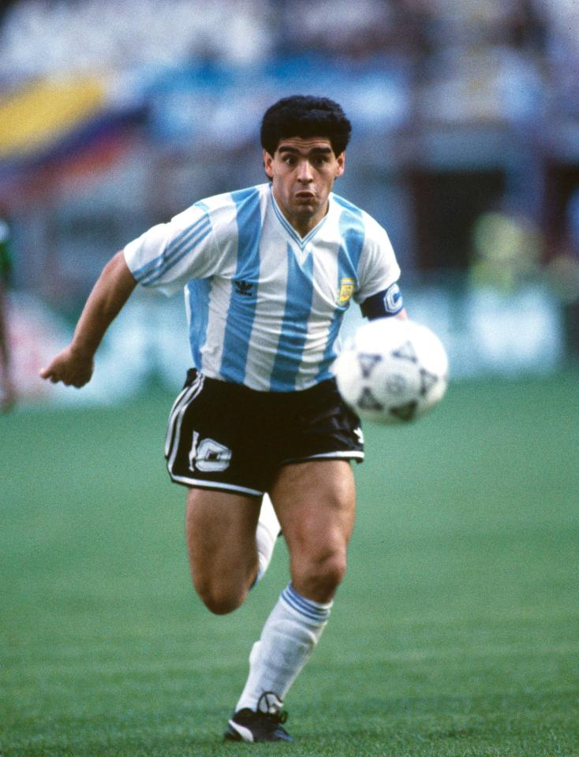
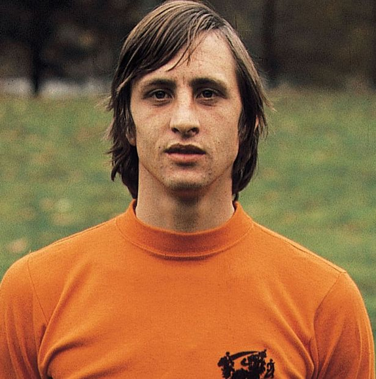
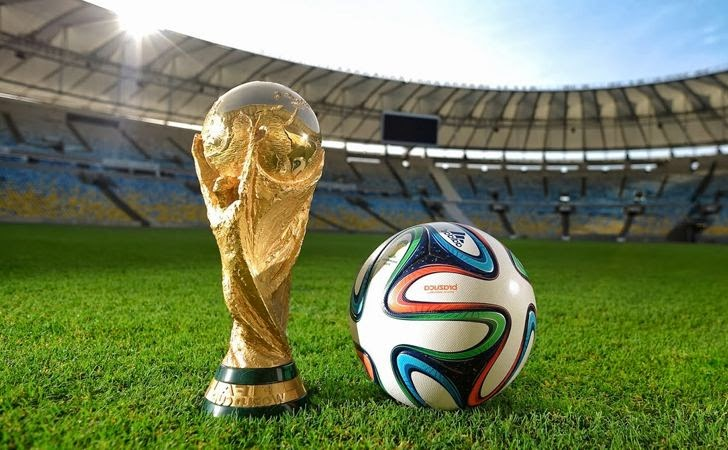

The earliest form of the game was in China two or three centuries BC when it was recorded as an exercise in a military manual. However,
it was England who started to develop the sport we all know and love today. The English were the ones who created the first rules of the game,
such as not being able to handle the ball with your hands. It was in the 1800’s when the sport rose to popularity and spread to the rest of
the world. In 1863, the Football Association (FA) was formed in England and the very first set of rules were established. In 1904, the
Fédération Internationale de Football Association (FIFA) was founded, and 3 decades later countries and their own leagues which consisted of
multiple soccer teams. The very first FIFA World Cup was hosted by Uruguay from July 13 to July 30, 1930. You can find out more
here.
Evolution of the Soccer Ball
It was in the twentieth century when most soccer balls were made of rubber. Before this, soccer balls were dependant on the shape and size of a pig’s bladder, which presented problems for the players
as the ball would rarely go where they were meant to. In 1872, soccer balls were supposed to be spherical with a circumference of 27 to 28 inches
(68.6 to 71.1 centimeters), with a weight of 13-15 ounces (368.5 to 425.2 pounds). As time went on, soccer balls became stronger, more durable,
and more stylish. Listed below are the requirements of size 5 balls, which are used in professional matches but can also be used by kids 11
years or older. For smaller sized balls, requirements are slightly different. For more information visit
this informative website.
Listed below are some of the requirements each soccer ball should meet.
69 to 71 centimeters in circumference (27 to 28 inches)
400 to 450 grams in weight (14 to 16 ounces)
Have a pressure of .6 to 1.1 bars (8.5 to 15.6 psi) at sea level
22 to 23 centimeters in diameter (8.6 to 9 inches)
11 to 11.5 centimeters in radius (4.3 to 4.5 inches)
Legends of the Game
Pelé

Maradona

Cruyff
Ever since soccer rose to global popularity, there have been many great players who have graced the field. Some of these players are Pelé, Maradona, Zidane, Ronaldo (Brazilian), Johan Cruyff, Ronaldinho, etc.
When discussing the best players in the history of soccer, Pelé, Maradona, and Cruyff usually come to mind first. Opinions vary from person to person, but generally, these 3 players are the highest on the list.
However, all of the players I have mentioned are retired players. Current soccer players like Cristiano Ronaldo and Lionel Messi are already considered legends and are two of the most talked about athletes not only in soccer,
but in all of sports.
Major Competitions
Like every other sport, soccer has many competitions that make it such an exciting sport to watch. The two biggest competitions are the FIFA World Cup and the Champions League.
FIFA World Cup
 The World Cup is without a doubt the biggest competition in soccer, as well as the most viewed sporting event in the entire world. For any soccer player, winning the FIFA World Cup is the ultimate accomplishment.
The World Cup is only for international teams, as opposed to the FIFA Club World Cup which is only for certain clubs. The very first World Cup was in 1930 and was hosted in Uruguay. The World Cup takes place every 4 years.
In 2010, 3.2 billion people viewed the competition worldwide!
Past Winners of the FIFA World Cup
Every 4 years one country is crowned the winner of the arguably the most prestigious competition in the entirety of sports, the FIFA World Cup. Listed below are some of the previous winners of this competition.
Germany (2014)
Spain (2010)
Italy (2006)
Brazil (2002)
France (1998)
UEFA Champions League
The UEFA Champions League is a competition organized by the Union of European Football Associations. The Champions League is full of top-division European clubs, and it is the most prestigious
club competition in soccer. Founded in 1955, the Champions League is an extremely popular sporting event, with it drawing a record of 360 million viewers in the final of the 2012-2013 tournament.
Past Winners of the UEFA Champions League
Real Madrid (2017)
Real Madrid (2016)
Barcelona (2015)
Real Madrid (2014)
Bayern Munich (2013)
As you can see, Real Madrid has won 3 times out of the past 5 years. Ever since the founding of the Champions League, they have been crowned champions 12 times! A.C. Milan
comes in second winning 7 times in total. To see the full list, click here.
Please note that this website is not fully updated.
 It was in the twentieth century when most soccer balls were made of rubber. Before this, soccer balls were dependant on the shape and size of a pig’s bladder, which presented problems for the players
as the ball would rarely go where they were meant to. In 1872, soccer balls were supposed to be spherical with a circumference of 27 to 28 inches
(68.6 to 71.1 centimeters), with a weight of 13-15 ounces (368.5 to 425.2 pounds). As time went on, soccer balls became stronger, more durable,
and more stylish. Listed below are the requirements of size 5 balls, which are used in professional matches but can also be used by kids 11
years or older. For smaller sized balls, requirements are slightly different. For more information visit
this informative website.
It was in the twentieth century when most soccer balls were made of rubber. Before this, soccer balls were dependant on the shape and size of a pig’s bladder, which presented problems for the players
as the ball would rarely go where they were meant to. In 1872, soccer balls were supposed to be spherical with a circumference of 27 to 28 inches
(68.6 to 71.1 centimeters), with a weight of 13-15 ounces (368.5 to 425.2 pounds). As time went on, soccer balls became stronger, more durable,
and more stylish. Listed below are the requirements of size 5 balls, which are used in professional matches but can also be used by kids 11
years or older. For smaller sized balls, requirements are slightly different. For more information visit
this informative website.